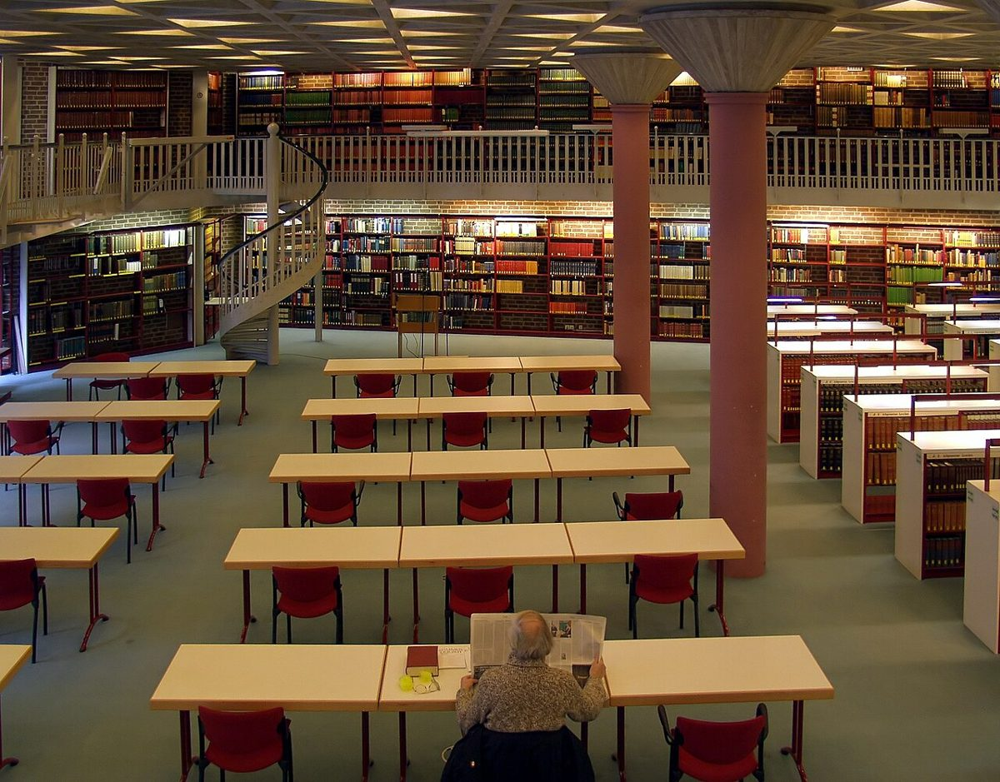

Der Kölner Dom: Ein majestätisches Highlight in Deutschland

Der Kölner Dom, eines der bekanntesten Wahrzeichen Deutschlands, ist ein beeindruckendes Meisterwerk gotischer Architektur und ein spirituelles Zentrum, das Millionen von Besuchern jährlich anzieht. Mit seiner reichen Geschichte, majestätischen Architektur und zentralen Lage ist der Dom ein Muss für jeden Reisenden in Köln. Hier findest du alles, was du für deinen Besuch wissen musst – von der Anreise bis hin zu den Highlights und kulinarischen Empfehlungen.
Anreise zum Kölner Dom
Der Kölner Dom liegt mitten im Herzen der Stadt und ist leicht zu erreichen. Wenn du mit dem Zug anreist, befindet sich der Hauptbahnhof direkt neben dem Dom. Von dort aus sind es nur wenige Schritte bis zum Eingang. Auch mit dem Auto ist der Dom gut erreichbar, allerdings solltest du bedenken, dass die Parkplätze in der Innenstadt begrenzt und oft teuer sind. Besser ist es, das Auto in einem Parkhaus außerhalb der Innenstadt abzustellen und mit öffentlichen Verkehrsmitteln weiterzufahren. Die Kölner Straßenbahn und Busse halten in unmittelbarer Nähe des Doms.
Beste Reisezeit
Der Kölner Dom kann das ganze Jahr über besucht werden, aber die beste Zeit für einen Besuch ist im Frühling oder Frühherbst. Das Wetter ist dann mild, und die Besucherströme sind nicht so groß wie im Sommer. Wer den Dom in aller Ruhe erkunden möchte, sollte früh am Morgen oder spät am Nachmittag kommen, da es dann weniger voll ist. Besonders beeindruckend ist der Dom während der Weihnachtszeit, wenn der Weihnachtsmarkt vor dem Dom stattfindet und die gesamte Umgebung festlich beleuchtet ist.
Highlights des Kölner Doms
1. **Die Aussichtsplattform**: Für einen atemberaubenden Blick über Köln solltest du die 533 Stufen zur Aussichtsplattform des Südturms erklimmen. Der Aufstieg ist zwar anstrengend, aber der Ausblick entschädigt dafür umso mehr.
2. **Die Schatzkammer**: Hier kannst du kostbare Reliquien, liturgische Geräte und alte Handschriften bewundern, die die lange Geschichte des Doms erzählen.
3. **Die Glasfenster**: Die farbenprächtigen Glasfenster des Kölner Doms sind weltberühmt. Besonders beeindruckend ist das Fenster von Gerhard Richter, das durch seine abstrakte Gestaltung besticht.
4. **Der Dreikönigsschrein**: Dieser prächtige goldene Schrein beherbergt die Reliquien der Heiligen Drei Könige und ist eines der bedeutendsten Kunstwerke des Doms.
5. **Die Domschatzkammer**: Hier kannst du unterirdische Räume erkunden, die voller historischer Schätze sind.
Kulinarische Empfehlungen
Nach deinem Besuch des Kölner Doms solltest du unbedingt die köstliche lokale Küche probieren. In der Nähe des Doms findest du zahlreiche Restaurants und Cafés, die typisch kölsche Gerichte wie Himmel un Ääd (Himmel und Erde, ein Gericht aus Kartoffeln und Äpfeln) oder Halver Hahn (ein Roggenbrötchen mit Käse) servieren. Dazu passt am besten ein frisch gezapftes Kölsch, das typische Bier der Region. Ein Besuch in einer der traditionellen Brauhäuser ist ein Muss, wenn du in Köln bist.
Fazir
Der Kölner Dom ist nicht nur ein architektonisches Meisterwerk, sondern auch ein Ort voller Geschichte und Spiritualität. Mit seinen beeindruckenden Highlights und der zentralen Lage ist er ein absolutes Highlight jeder Reise nach Köln. Plane deinen Besuch sorgfältig, um das Beste aus dieser Erfahrung herauszuholen, und lass dich von der beeindruckenden Atmosphäre dieses ikonischen Bauwerks begeistern.
Haiktec
- Bayerische Alpen Entdecken: Der ultimative Roadtrip-Guide für Selbstständige und Freiberufler
- Prüfungsvorbereitungs-Budget & Lernfortschritt Tracker
- 7 Erfolgsstrategien für kleine Restaurants und Cafés: Mehr Gäste, mehr Umsatz
Text mit KI erstellt und automatisch geprueft.